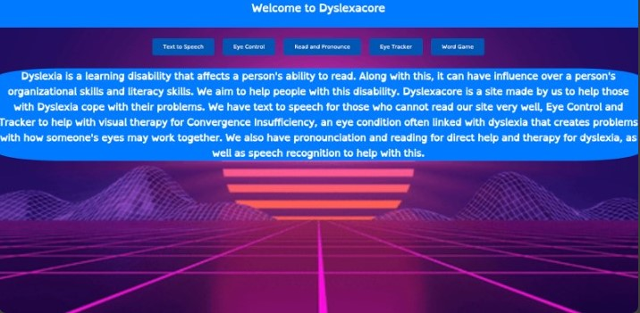
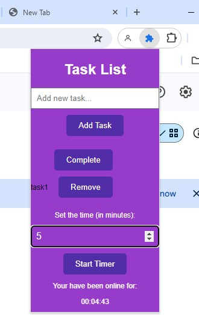

Fullstack
4/26/2023
Dyslexacore is a project I have worked on at a hackathon with a friend. It is a project which has the goal of helping people with Dyslexia, with different minigames geared towards that. This helped me work on my professional writing skills as our general goal had more readability involved while trying to market our idea. Our design was overflowing with creative CSS as we wanted to make our site look as appealing as possible. Two skills which popped up that I learned were the skills of working with div classes and different CSS functions which were usable in the project and needed. We had a few challenges as we were not that proficient in fullstack, but our teamwork and coordination made up for that with a flawless display. We evenly split up the pages to work on and my specific role incorporated some of these.
Fullstack, JSON
5/15/2024
Mind Up! Was a project which started due to a project in CSE. Our group decided that we wanted to solve the problem of scheduling and stress by creating a google chrome extension to combat those things. My technical writing skills improved as I was the main documentor who worked on documentation, needing to write large paragraphs and essays to market our extension and explain it. Design creativity was also something that I expanded on as we needed to make our extension look as good as possible. Two skills that I have learned are the skills of documenting certain aspects in details, while also learning how to make a google chrome extension with JSON, which I have never used. My specific role in the project included documentation and the front page of the work time page, with certain things. I learned a lot about google chrome extensions. Some challenges including weaving together the javascript and JSON while following the content security policy. Our teamwork was evident as we worked together to gets objectives done with efficiency.
